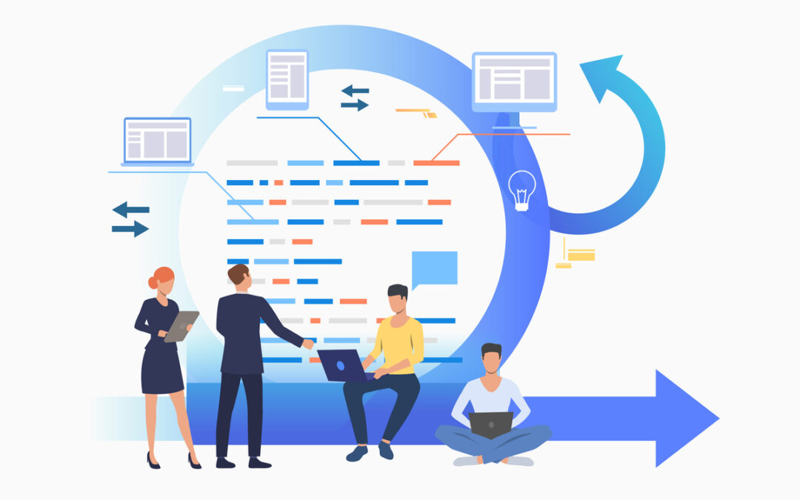
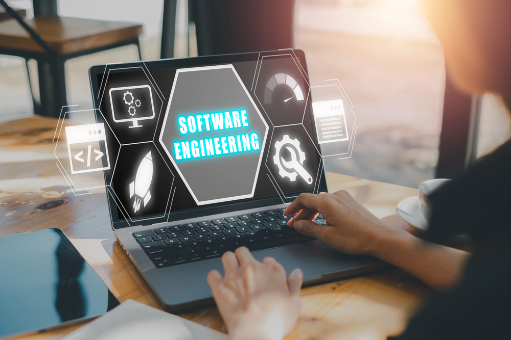
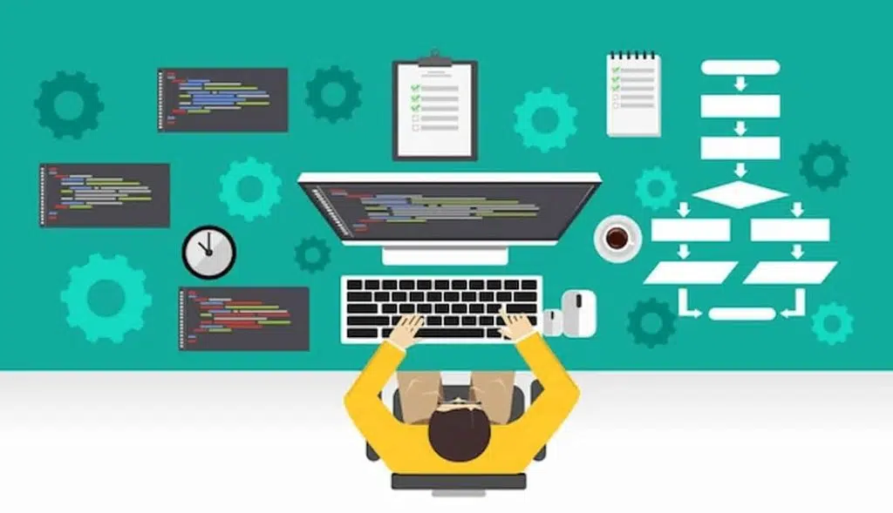

1.-Comunicacion
Es la etapa inicial del proceso, donde se establece la interacción con el cliente o usuario final para comprender completamente el problema que se desea resolver. En esta fase se identifican y documentan los requisitos del sistema, tanto funcionales como no funcionales. También se definen los objetivos, restricciones y expectativas del proyecto. Una comunicación efectiva es fundamental, ya que cualquier error en esta etapa puede afectar todo el desarrollo posterior.

2.-Planeacion
En esta etapa se organiza y estructura el proyecto de software. Se estiman los recursos necesarios (humanos, tecnológicos y económicos), se define un cronograma de actividades y se establecen las tareas a realizar. Además, se identifican posibles riesgos y se plantean estrategias para mitigarlos. La planeación permite tener un control adecuado del proyecto y asegurar que se cumplan los tiempos y objetivos establecidos.

3.-Modelado
El modelado consiste en la creación de representaciones abstractas del sistema antes de su implementación. En esta fase se diseña la arquitectura del software, la estructura de datos, los algoritmos y las interfaces de usuario. Se utilizan herramientas como diagramas UML para visualizar el funcionamiento del sistema. El objetivo es construir un “modelo” claro que sirva como guía para el desarrollo, reduciendo errores y mejorando la calidad del software.

4.-Construccion
Es la etapa donde se lleva a cabo la implementación del sistema mediante la programación. Los desarrolladores escriben el código siguiendo los modelos y diseños previamente definidos. Además, se realizan pruebas (unitarias, de integración, etc.) para verificar que cada componente funcione correctamente. Esta fase combina desarrollo y validación, asegurando que el software cumpla con los requisitos establecidos.

5.-Despliegue
En esta última etapa el software se entrega al usuario final y se pone en funcionamiento en un entorno real. Incluye la instalación, configuración y capacitación de los usuarios si es necesario. También se recopila retroalimentación para realizar mejoras, correcciones o actualizaciones futuras. El despliegue no marca el final del proceso, ya que el software entra en una fase continua de mantenimiento y evolución.